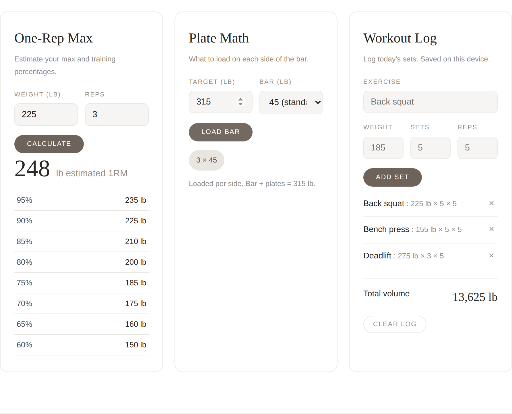

Three tools I actually use at the gym
A one-rep-max calculator, barbell plate math, and a workout logger, all on one page. Everything runs entirely in your browser and saves to your device, no account and no server needed.
Highlights
- Estimate your one-rep max and see training percentages
- Barbell plate math: what to load on each side
- Log today's sets and track your total volume
- Saves locally, so your log is there next time
- Fast, clean, and works on your phone at the gym
Examples
All three tools working together: a one-rep-max estimate, plate math for 315 lb, and a logged squat/bench/deadlift session.

Live demo
Fully working: calculate a one-rep max, load a bar, and log a set below.